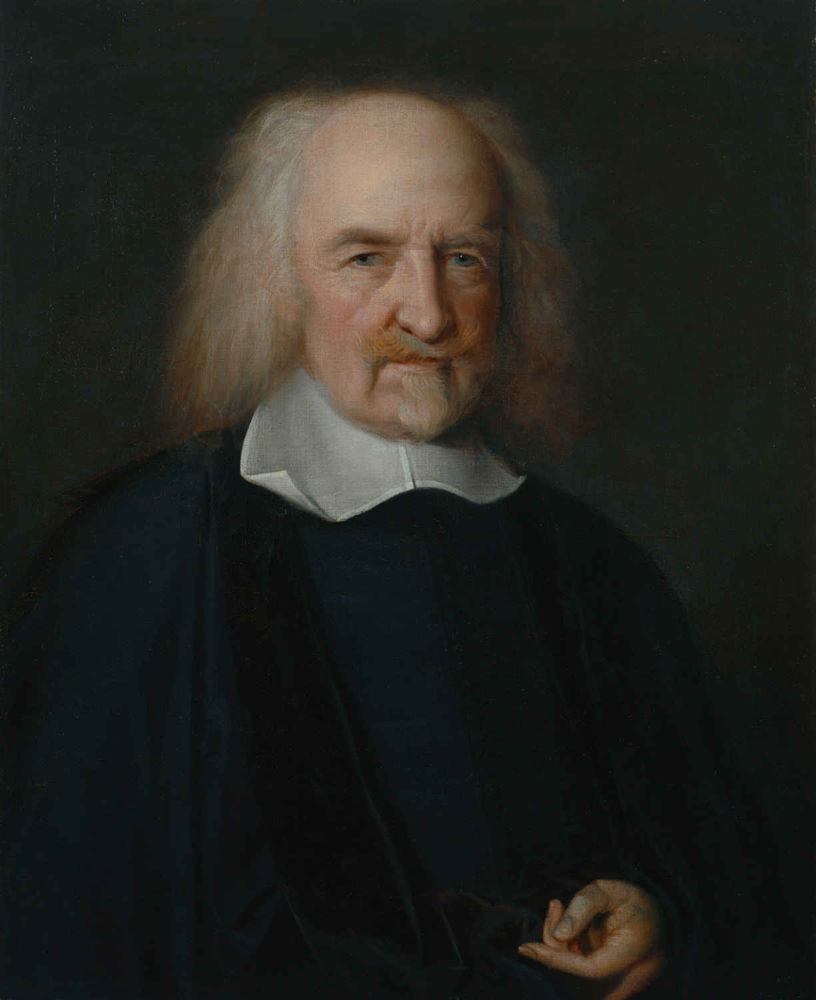
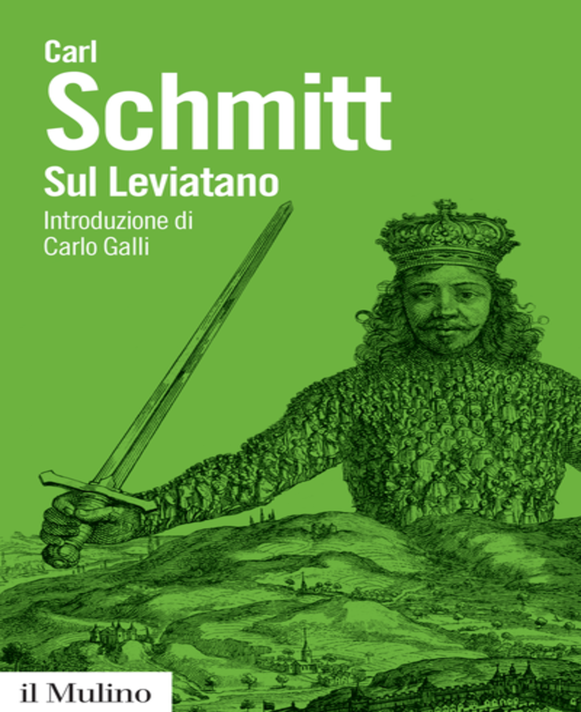

- Home
- Catalogo



La collezione comprende tutti gli scritti pubblicati da Thomas Hobbes,
i frontespizi delle opere e diverse risorse Audio/Video,
utili ad approcciarne e comprenderne i concetti filosofici.Scopri l'intero catalogo.
- Dati
L'interoperabilità è uno dei precetti fondanti Leviatanico:
l'accesso a tutti i dati utilizzati sul sito, anche comodamente
scaricabili dal catalogo, è ottimizzato in una sola pagina web.Vai alla pagina dei dati - Contatti
Per qualsiasi problema, richiesta o
informazione relativa al sito. - Progetto
Il progetto, cui scopo è la catalogazione,
metadatazione, consultazione ed interoperabile
fruibilità delle opere hobbesiane, fa parte del
Digital Humanities Advanced Research Center
dell'Alma Mater Studiorum - Università di Bologna.Vai alla pagina dettagliata del progetto.